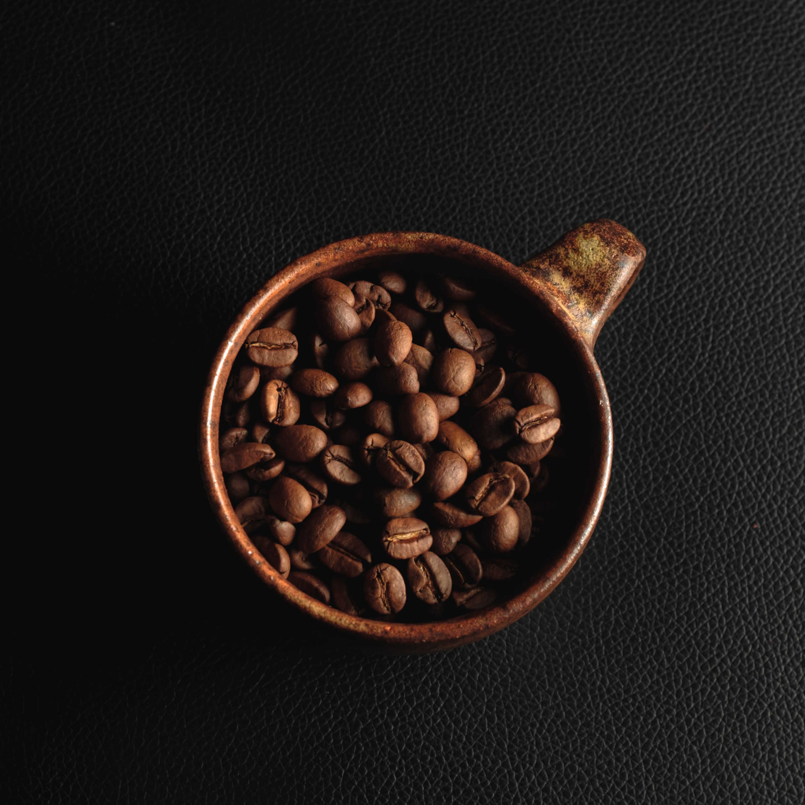

Butter Coffee
Description
Butter coffee is believed to provide steady, long-lasting energy without a blood sugar crash. In theory, since fat slows digestion, the caffeine in the coffee is absorbed slower and provides longer-lasting energy.
Ingredients
- 250mL of Coffee
- 30g of Unsalted Butter
Steps
- Add 250mL of Coffee to the blender
- Add 30g of Unsalted Butter to the blender
- Blend for 30 seconds